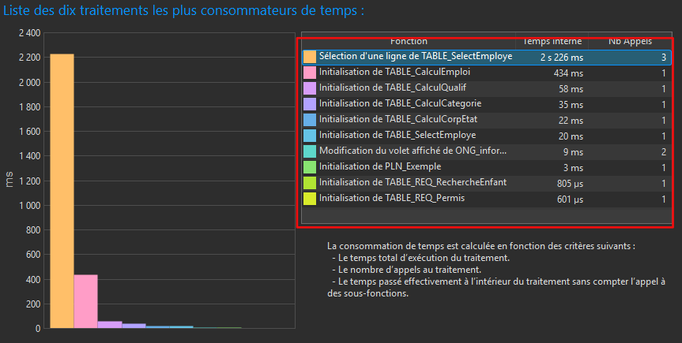

Trace 1 - Analyse des performances et identification des traitements coûteux
Savoir-faire élémentaires
- Savoir utiliser un outil d'analyse de performance
- Savoir lire des indicateurs techniques d'exécution
- Savoir repérer un traitement consommateur de temps
- Savoir interpréter les résultats d'une analyse
- Savoir identifier une piste d'optimisation

Repères colorés sur la trace
- Encadré vert : tableau principal des mesures de performance.
- Encadré orange : graphique ou indicateur visuel synthétique.
- Encadré bleu : valeurs chiffrées détaillées d'exécution.
- Encadré rouge : traitement particulièrement coûteux ou zone critique.
Descriptif général de la trace
Cette trace montre les résultats d'une analyse de performance réalisée sur l'application. Elle présente les traitements les plus consommateurs en temps d'exécution ainsi que plusieurs indicateurs associés, comme le temps total, le temps interne ou le nombre d'appels. Cette trace est importante car elle permet d'identifier les points sensibles de l'application et d'orienter les efforts d'amélioration.
Descriptif des savoir-faire
L'encadré vert met en évidence le tableau principal des mesures, ce qui montre ma capacité à utiliser un outil d'analyse de performance dans un contexte réel. L'encadré orange attire l'attention sur une synthèse visuelle, illustrant mon aptitude à lire rapidement un indicateur global. L'encadré bleu met en avant les valeurs détaillées, ce qui montre que je sais lire des indicateurs techniques d'exécution. Enfin, l'encadré rouge souligne un traitement particulièrement coûteux, démontrant ma capacité à repérer une zone critique et à identifier une piste d'optimisation.